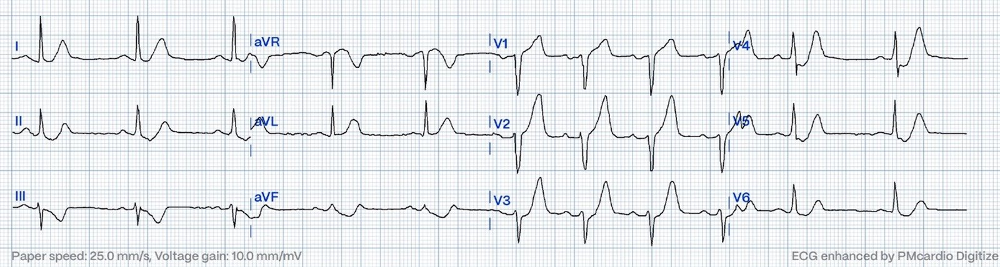
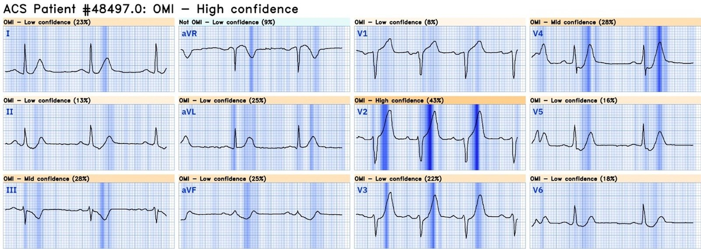
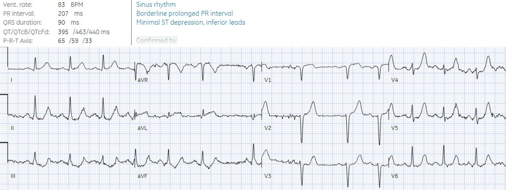
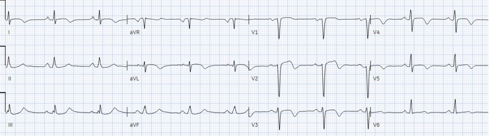
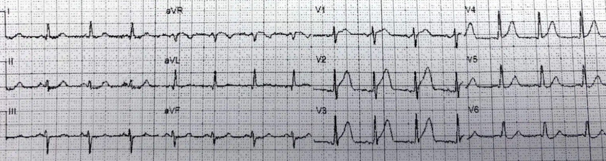

07/07/2024 — Người 60 tuổi đau ngực, STEMI âm tính. Chẩn đoán ra viện nên là gì?
Bản dịch tiếng Việt của bài "60 year old with chest pain, STEMI negative. What should the discharge diagnosis be?" – Dr. Smith’s ECG Blog. Giữ nguyên toàn bộ 6 hình ảnh của bản gốc.
Tác giả: Jesse McLaren
Một người 60 tuổi trước đây khỏe mạnh
xuất hiện đau ngực khi gắng sức kèm vã mồ hôi, và đã gọi đội cấp cứu ngoài viện (EMS). Đây là
điện tâm đồ do EMS ghi, được số hóa bằng PM cardio. Bạn nghĩ gì?


Có loạn nhịp
xoang với dẫn truyền bình thường, trục bình thường và điện thế bình thường. Có
mất sóng R ở V2-3 với sóng T tối cấp (hyperacute) ở V1-5. Không có ST
chênh lên đáng kể nhưng có hai dạng ST chênh xuống: sóng T de Winter ở V3-5 và
xoáy trước tim (precordial swirl) với ST chênh xuống ở V6, soi gương với ST chênh lên (STE) kín đáo ở V1. Ở các chuyển đạo chi
không có ST chênh lên, nhưng có sóng T tối cấp ở I/aVL với
ST chênh xuống soi gương ở thành dưới. Như vậy, dù không có tiêu chuẩn STEMI để chẩn đoán, vẫn
có nhiều bất thường thiếu máu cục bộ ở 11/12 chuyển đạo liên quan đến QRS, ST và sóng T, và các bất thường này
đủ để chẩn đoán tắc LAD đoạn gần.
Hệ thống AI Queen of Hearts PMCardio rất tự tin là OMI dựa trên sóng T tối cấp và ST chênh xuống, dù không có tiêu chuẩn STEMI:


Precordial Swirl — 20 cases of Swirl or Look-Alikes (Xoáy trước tim — 20 ca xoáy hoặc hình ảnh giống xoáy)
Bấm vào đây để đăng ký quyền truy cập Queen of Hearts
Nhân viên cấp cứu ngoài viện đã
báo động STEMI (code STEMI) ngay từ hiện trường, cho bệnh nhân dùng aspirin và ba nhát xịt
nitro. Họ đến khoa cấp cứu (ED) 30 phút sau để gặp nhóm tim mạch,
tại đây điện tâm đồ được ghi lại:


Một lần nữa không có tiêu chuẩn
STEMI, và hình ảnh de Winter cũng như xoáy đã cải thiện. Nhưng
vẫn còn sóng T tối cấp ở các chuyển đạo trước tim và vẫn còn ST chênh xuống
ở thành dưới, và điều này là soi gương với ST chênh lên thẳng kín đáo ở aVL. Kết quả
đọc cuối cùng của bác sĩ tim mạch (đọc mù) chỉ ghi nhận ST chênh xuống tối thiểu
ở thành dưới, nhưng điện tâm đồ vẫn đủ để chẩn đoán tắc LAD đoạn gần.
May mắn là
nhóm tim mạch điều trị đã nhận ra sóng T tối cấp và ST chênh lên kín đáo ở aVL và
tiếp tục kế hoạch chụp mạch vành cấp cứu: tắc 100% LAD đoạn gần. Troponin
đầu tiên là 7.000 ng/L (bình thường <26 ở nam và <16 ở nữ), phù hợp
với tình trạng mất sóng R, và đỉnh là 94.000 ng/L. Siêu âm tim cho thấy EF giảm còn 35% với giảm động vùng trước vách và vô động mỏm. Điện tâm đồ lúc ra viện cho thấy
sóng T đảo ngược do tái tưới máu ở thành trước-bên:


Chẩn đoán
ra viện là ‘STEMI’ nhưng không có điện tâm đồ nào đạt tiêu chuẩn STEMI, và kết quả đọc mù của bác sĩ
tim mạch đối với điện tâm đồ ở khoa cấp cứu cũng là STEMI âm tính.
Trong mô hình STEMI hiện nay
thì gọi ca này là Non-STEMI sẽ hợp lý hơn, vì bệnh nhân bị nhồi máu cơ tim
típ 1 mà không có điện tâm đồ nào đạt tiêu chuẩn STEMI. Nhưng như vậy sẽ không giải thích được vì sao
phòng thông tim được kích hoạt cấp cứu, vì việc này lẽ ra chỉ dành cho
bệnh nhân STEMI. Vì vậy chẩn đoán
ra viện ‘STEMI’ phản ánh thời gian đến điều trị (thông tim cấp cứu) nhiều hơn
là cách phân đôi chẩn đoán hiện nay (STEMI vs Non-STEMI). Đây là ví dụ cho một điều thường gặp: các bác sĩ lâm sàng gọi OMI là “STEMI.” Vậy đây là một OMI STEMI âm tính (STEMI(-)OMI) đã được xử trí như STEMI, với tái tưới máu nhanh
bất chấp mô hình hiện nay.
Chẩn đoán ra viện: STEMI/NSTEMI vs OMI/NOMI
Điều này quan trọng
vì > 25% bệnh nhân ‘Non-STEMI’ được chụp mạch vành
muộn có đúng cùng bệnh học tắc mạch vành cấp. Chẩn đoán
ra viện của họ cũng phản ánh thời gian đến điều trị (thông tim
không khẩn cấp) nhiều hơn là chẩn đoán.
Những chẩn đoán ra viện này tạo ra sai lệch trong cơ sở dữ liệu STEMI/Non-STEMI: không
chỉ các OMI STEMI âm tính được tái tưới máu muộn bị vùi lấp trong cơ sở dữ liệu Non-STEMI
cùng với các nhồi máu không tắc, khiến chúng ta không học được từ các ca tắc
bị bỏ sót; mà các OMI STEMI âm tính được tái tưới máu nhanh cũng bị vùi lấp trong
cơ sở dữ liệu STEMI, khiến chúng ta không học được từ những ca tuyệt vời như ca này.
Cả hai
đều củng cố cách phân đôi sai lầm STEMI/non-STEMI, và là rào cản đối với việc chuyển
sang mô hình OMI.
Để so sánh, xem ca tương tự này ở một người 60 tuổi đau ngực, được kích hoạt phòng thông tim từ hiện trường:


Cũng đủ để chẩn đoán tắc LAD, với sóng T tối cấp ở thành trước, xoáy trước tim, và ST chênh xuống kín đáo ở thành dưới. Bệnh nhân này cũng tắc 100% LAD đoạn gần, với troponin đỉnh 100.000 ng/L. Nhưng vì báo động STEMI bị hủy khi đến viện và bệnh nhân được chụp mạch vành muộn, chẩn đoán ra viện là ‘non-STEMI’ dù có đúng cùng bệnh học.
Thay vì gọi ca thứ nhất là ‘STEMI’ vì được tái tưới máu nhanh và ca thứ hai là ‘non-STEMI’ vì tái tưới máu muộn, cả hai nên được gọi đúng bản chất: OMI – và khi đó chúng ta có thể học được từ cả hai.
Đồng thuận chuyên gia
mới của ACC giải thích rằng: “Chỉ riêng tiêu chuẩn STEMI trên điện tâm đồ 12 chuyển đạo chuẩn
sẽ bỏ sót một nhóm thiểu số đáng kể bệnh nhân bị tắc mạch vành
cấp. Vì vậy, cần xem xét kỹ điện tâm đồ để tìm các thay đổi kín đáo
có thể là dấu hiệu điện tâm đồ ban đầu của tắc mạch, như sóng T
tối cấp hoặc đoạn ST chênh lên <1 mm, đặc biệt khi đi kèm
đoạn ST chênh xuống soi gương.” Nhưng nếu tiêu chuẩn STEMI là một chỉ dấu thay thế kém,
và nếu điều chúng ta quan tâm là tắc mạch vành cấp, thì chẩn đoán ra viện
nên thay đổi để phản ánh cách phân loại mới OMI/NOMI thay vì
STEMI/Non-STEMI.
Điều cần nhớ
1. Tiêu chuẩn STEMI có độ nhạy kém
đối với tắc mạch vành cấp
2. Các dấu hiệu tắc mạch khác
gồm sóng T tối cấp, hình ảnh de Winter, xoáy trước tim, và ST chênh xuống soi gương với ST chênh lên kín đáo/sóng T tối cấp
3. Chẩn đoán ra viện và phân loại nhồi máu
cơ tim nên phản ánh kết cục của bệnh nhân là nhồi máu do tắc hay không do tắc,
chứ không phải tiêu chuẩn tùy tiện có STE hay không có STE, hay thời gian đến thông tim nhanh hay muộn. Khi đó mọi OMI đều có thể được xem xét lại để
xác định ca nào bị bỏ sót và ca nào được tái tưới máu nhanh, nhằm học được
từ cả hai

===================================
BÌNH LUẬN CỦA TÔI, bởi KEN GRAUER, MD (7/7/2024):
===================================
Bài hôm nay của BS. McLaren là một bài quan trọng — ở chỗ nhấn mạnh, thông qua 2 ca lâm sàng minh họa, những thiếu sót của mô hình STEMI lỗi thời và nhiều vấn đề.
- Những người theo dõi thường xuyên Dr. Smith’s ECG Blog hẳn đã rất quen thuộc với hàng chục ca chúng tôi đã trình bày minh họa những gian nan, trắc trở của mô hình STEMI dựa trên milimét. Có quá nhiều bác sĩ lâm sàng (kể cả bác sĩ tim mạch) — vẫn “mắc kẹt” với mô hình STEMI này do thói quen và do chưa hiểu được sinh lý bệnh nay đã được xác định rõ về những gì xảy ra trong diễn tiến của một ACO (tắc mạch vành cấp — Acute Coronary Occlusion) đang tiến triển — chính là điều chúng tôi gọi là OMI (nhồi máu cơ tim do tắc — Occlusion Myocardial Infarction).
- Như 2 ca BS. McLaren trình bày hôm nay — hậu quả của cách tiếp cận sai lầm hiện nay là rất nhiều và sâu rộng.
Một khối y văn ngày càng mở rộng nay đã chứng minh một cách thuyết phục những điều sau:
- Tuân thủ cứng nhắc tiêu chuẩn STEMI dựa trên milimét bỏ sót ít nhất 1/3 số OMI (Meyers, Smith và cs. — Ann Emerg Med 74(4): S26, 2019 — và — Meyers, Smith và cs. — Int J Cardiol Heart Vasc, 2021).
- Chúng tôi biết tiêu chuẩn STEMI có vấn đề — vì các bác sĩ lâm sàng được đào tạo để đánh giá các thông số điện tâm đồ khác (thay vì chỉ dựa vào một số milimét ST chênh lên nhất định) — có thể nhận diện chính xác những OMI mà việc tuân thủ tiêu chuẩn STEMI sẽ bỏ sót (McLaren, Meyers, Smith — Canad J Emerg Med 24: 250-255, 2022) — và — Westafer L — ACEP Now, Dec., 2022 — và — Kontos và cs.; Đồng thuận chuyên gia ACC 2022 — JACC 80(20):1925-1960, 2022).
- Không chỉ đơn thuần là không nhận diện được các ca STEMI-/OMI+ — việc tuân thủ mô hình STEMI lỗi thời có thể dẫn đến chẩn đoán muộn ở nhiều bệnh nhân tắc mạch vành cấp không biểu hiện đủ ST chênh lên để “đạt chuẩn” STEMI vào thời điểm họ được khám.
- Thực tế lâm sàng của việc chẩn đoán muộn này làm sai lệch dữ liệu trong y văn do đánh giá quá cao độ chính xác của mô hình STEMI. Điều này xảy ra vì một số bệnh nhân ban đầu STEMI- — cuối cùng thực sự xuất hiện đủ ST chênh lên để “đạt chuẩn” STEMI — nhưng sự chậm trễ hàng giờ (và đôi khi chậm trễ tới một ngày hoặc hơn!) — đồng nghĩa với mất đáng kể cơ tim còn sống ở những bệnh nhân OMI+ này, những người lẽ ra đã phải được nhận diện và điều trị bằng PCI từ lâu trước khi cuối cùng họ xuất hiện “đủ” ST chênh lên để đạt chuẩn STEMI (McLaren, Meyers, Smith — J Electrocardiol 76: 39-44, 2023).
- Một cách khác khiến y văn hiện nay bị sai lệch theo hướng có lợi cho mô hình STEMI thất bại — là không có âm tính giả nào trong số các bệnh nhân STEMI- (McLaren, Meyers, Smith — J Electrocardiol 76: 39-44, 2023). Đó là vì việc không thỏa tiêu chuẩn STEMI dựa trên milimét bị chấp nhận một cách sai lầm như là không có tắc mạch vành cấp — rồi bị phân loại sai thành “NSTEMI”. Đáng tiếc là sai sót phương pháp luận này duy trì những kết luận sai về độ chính xác bị thổi phồng của tiêu chuẩn STEMI.
Bác sĩ lâm sàng và mô hình STEMI đều bỏ qua sinh lý bệnh của OMI:
Dựa trên các ca được gửi đến Dr. Smith’s ECG Blog — tuyệt đại đa số bác sĩ lâm sàng (kể cả bác sĩ tim mạch) bỏ qua sinh lý bệnh cơ bản của những gì xảy ra trong diễn tiến của một OMI đang tiến triển cấp tính. Hãy xem xét những điều sau:
- Không hiếm khi — động mạch “thủ phạm” có thể đột ngột tắc — rồi tự mở lại (đôi khi trước cả khi bệnh nhân đi khám) — và đôi lúc tiếp tục tự mở ra rồi đóng lại nhiều lần. Đọc các điện tâm đồ liên tiếp đối chiếu với bệnh sử của bệnh nhân — có thể cho chúng ta biết tình trạng của mạch “thủ phạm” (nhờ đó giúp chúng ta rất nhiều trong việc hiểu và đọc những điện tâm đồ có thể không cho thấy ST chênh lên rõ ràng).
- Khi tắc cấp — bệnh nhân thường xuất hiện CP (đau ngực — Chest Pain) — và — đoạn ST ở vùng nhồi máu có xu hướng chênh lên, trong khi ở các vùng đối diện của tim thường có ST chênh xuống soi gương.
- Khi mạch “thủ phạm” mở lại tự phát — CP giảm (hoặc hết) — và — các độ lệch đoạn ST (chênh lên và chênh xuống) cải thiện hoặc trở về bình thường.
- Điểm MẤU CHỐT: Cái gì tự mở ra — cũng có thể dễ dàng (và vào bất kỳ lúc nào) tự đóng lại. Chính vì lý do này mà ngay cả khi một bệnh nhân từng có ST chênh lên nay đã hết đau và nay không còn ST chênh lên — thì thông tim kèm PCI kịp thời vẫn được chỉ định, vì bệnh nhân đó vẫn có thể tự tắc lại vào bất kỳ lúc nào.
- CẢNH BÁO: Ngay cả một STEMI mới xảy ra cũng có thể không cho thấy ST chênh lên tại thời điểm ghi điện tâm đồ mà bạn đang xem NẾU — trước đó đã có một quá trình tắc từng lúc diễn ra liên tục , xen kẽ với tái thông tự phát. Hãy nhớ rằng giữa pha ST chênh lên cấp và pha xuất hiện sóng T tái tưới máu (với sóng T đảo ngược) — có thể có một pha giả bình thường hóa, trong đó điện tâm đồ có thể trông bình thường một cách đáng ngạc nhiên.
- Nhiều bệnh nhân có troponin dương tính và điện tâm đồ không có gì đáng chú ý hoặc chỉ có thay đổi không đặc hiệu tại thời điểm ghi bản ghi — bị chẩn đoán nhầm là “NSTEMI” — trong khi thực tế họ đã bị tắc động mạch vành cấp. Việc không đối chiếu triệu chứng với từng điện tâm đồ (xuất phát từ việc không hiểu rõ sinh lý bệnh mô tả ở trên của một OMI đang tiến triển cấp) là lý do khiến thuật ngữ “NSTEMI” bị lạm dụng quá mức.
- Cuối cùng, tùy thuộc vào việc thông tim được thực hiện KHI NÀO trong diễn tiến của một STEMI “thoáng qua” — động mạch “thủ phạm” không phải lúc nào cũng còn tắc tại thời điểm thông tim (tức là, một động mạch chưa tắc hoàn toàn trên phim chụp mạch vẫn có thể là động mạch “thủ phạm” đã gây ra nhồi máu).